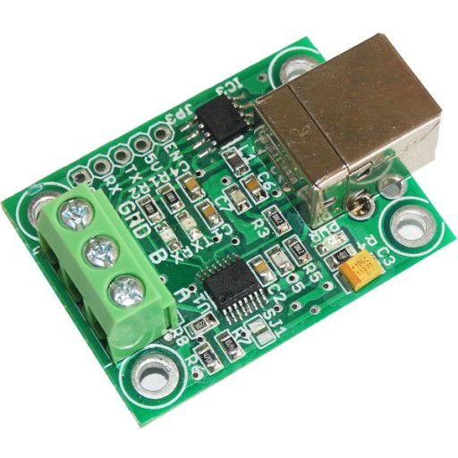
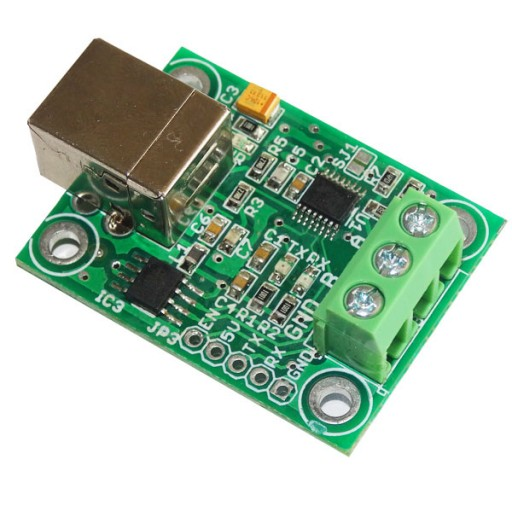
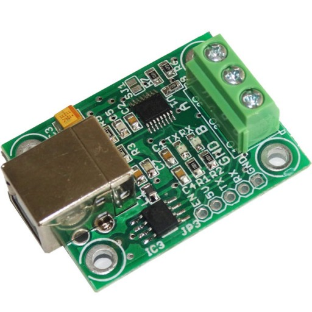
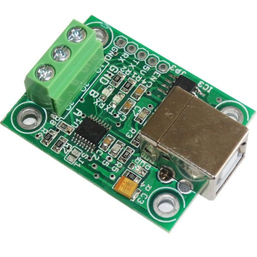
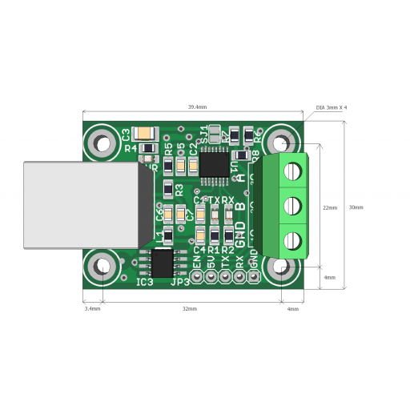
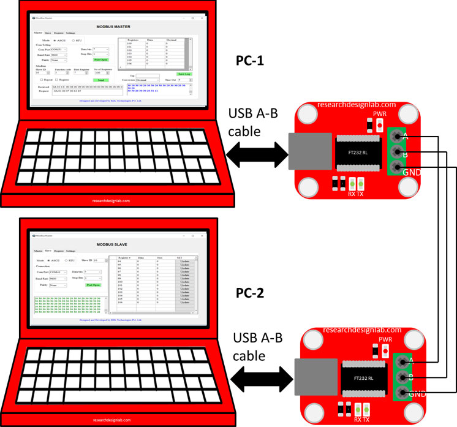
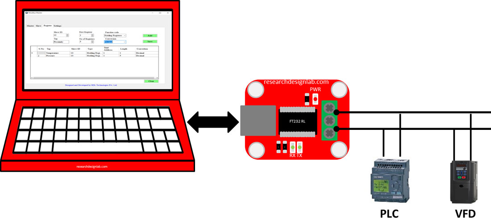

USB To RS485 Converter Module FT230X (V2)
Order Code: RDL812
A fully automatic plug-and-play USB module that connects to your PC via the Universal Serial Bus (USB) port and provides robust bidirectional USB to RS-485 protocol conversion with automatic flow control. Self-powered directly from USB, it allows up to 32 RS-485 devices to be connected and multi-dropped from a single USB port - ideal for industrial PLCs, HMIs, surveillance cameras, video capture devices and fingerprint attendance systems.
Key Features
- Fully automatic plug-and-play USB to RS-485 converter
- Self-powered directly from USB - no external supply needed
- Compact, user-friendly board design
- USB 2.0 compliant
- Built on the FTDI FT230X IC
- Wide baud rate range: 300 bps to 3,145,728 bps
- Automatic RS-485 flow control (no manual direction switching)
- Supports up to 32 RS-485 devices on a single USB port
- Virtual COM Port (VCP) and D2XX driver support
- Compatible with PLCs, HMIs, surveillance cameras, video capture devices and fingerprint systems
Specifications
| Specification | Details |
|---|---|
| USB Chipset | FTDI FT230X |
| Interface | USB to RS-485 |
| Power Source | Self-powered via USB |
| USB Standard | USB 2.0 |
| Baud Rate Range | 300 bps to 3,145,728 bps |
| Multi-Drop Support | Up to 32 RS-485 devices per USB port |
| Driver Support | Virtual COM Port (VCP) / D2XX |
| Form Factor | Compact board-level module |
| RoHS Compliant | Yes |
Connection Diagrams


Applications
- USB to serial RS-485 level conversion
- Industrial PLC/HMI/SCADA communication
- Surveillance camera and video capture device connectivity
- Fingerprint attendance and biometric system interfacing
- Multi-drop RS-485 networks from a single USB port
- Upgrading legacy serial peripherals to USB
Package Contents
- USB To RS485 Converter Module FT230X (V2) × 1